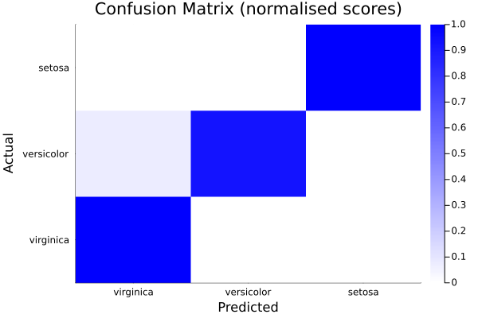
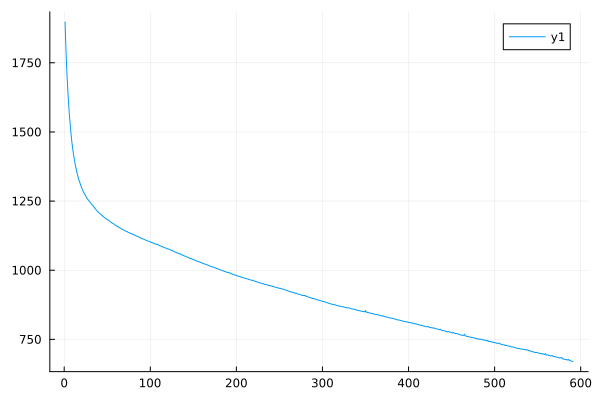
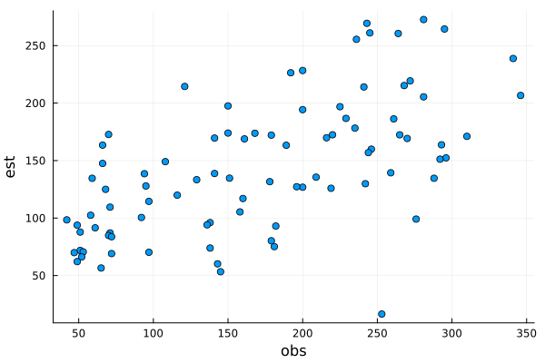
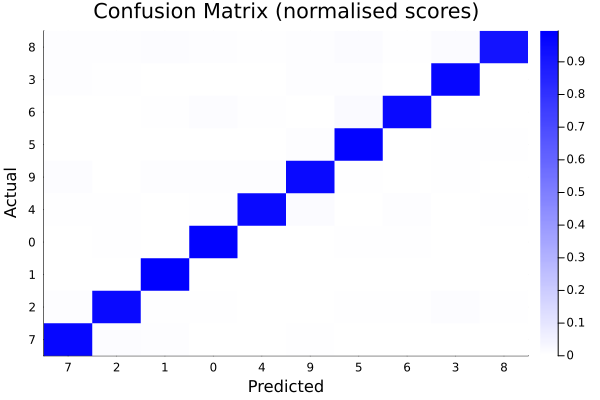

04 NN - 2A: Binary classification (15:54)
04 NN - 2B: Multinomial classification (15:1)
04 NN - 2C: Regression (6:3)
04 NN - 2D: Convolutional neural networks (13:19)
0402 - Implementation of Neural network workflows
Some stuff to set-up the environment..
julia> cd(@__DIR__)julia> using Pkgjulia> Pkg.activate(".") # If using a Julia version different than 1.10 please uncomment and run the following line (the guarantee of reproducibility will however be lost) # Pkg.resolve()Activating project at `~/work/SPMLJ/SPMLJ/buildedDoc/04_-_NN_-_Neural_Networks`julia> Pkg.instantiate()julia> using Random, Plotsjulia> Random.seed!(123)Random.TaskLocalRNG()julia> ENV["DATADEPS_ALWAYS_ACCEPT"] = "true""true"
We will not run cross validation here to find the optimal hyper-parameters. The process will not be different than those we saw in the lesson on the Perceptron. Instead we focus on creating neural network models, train them based on data and evaluating their predictions. For feed-forward neural networks (both for classification and regression) we will use BetaML, while for Convolutional Neural Networks example we will use the Flux.jl package.
Feed-forward neural networks
Binary classification
Data loading...
julia> using BetaML, DelimitedFilesjulia> data = readdlm(joinpath(dirname(pathof(BetaML)),"..","test","data","binary2DData.csv"),'\t')200×3 Matrix{Float64}: -1.0 1.76 0.4 -1.0 0.979 2.24 -1.0 1.87 -0.977 -1.0 0.95 -0.151 -1.0 -0.103 0.411 -1.0 0.144 1.45 -1.0 0.761 0.122 -1.0 0.444 0.334 -1.0 1.49 -0.205 -1.0 0.313 -0.854 ⋮ 1.0 -0.256 0.977 1.0 2.04 0.343 1.0 1.01 0.528 1.0 3.65 2.16 1.0 2.57 1.78 1.0 1.65 0.384 1.0 1.71 1.24 1.0 2.86 3.14 1.0 3.47 2.85julia> nR = size(data,1)200julia> idx = shuffle(1:nR)200-element Vector{Int64}: 123 131 74 23 19 78 43 130 83 186 ⋮ 137 175 182 37 71 89 142 82 170julia> data = data[idx,:]200×3 Matrix{Float64}: 1.0 1.69 0.324 1.0 0.811 1.49 -1.0 -0.913 1.12 -1.0 -0.5097 -0.4381 -1.0 1.23 1.2 -1.0 -0.0985 -0.6635 -1.0 1.49 1.9 1.0 0.417 2.61 -1.0 -1.23 0.844 1.0 2.28 1.01 ⋮ 1.0 3.96 2.39 1.0 2.58 2.35 1.0 2.93 2.34 -1.0 1.14 -1.23 -1.0 -1.49 0.439 -1.0 -0.8034 -0.6895 1.0 1.31 3.54 -1.0 0.949 0.0876 1.0 1.32 3.66julia> X = copy(data[:,[2,3]])200×2 Matrix{Float64}: 1.69 0.324 0.811 1.49 -0.913 1.12 -0.5097 -0.4381 1.23 1.2 -0.0985 -0.6635 1.49 1.9 0.417 2.61 -1.23 0.844 2.28 1.01 ⋮ 3.96 2.39 2.58 2.35 2.93 2.34 1.14 -1.23 -1.49 0.439 -0.8034 -0.6895 1.31 3.54 0.949 0.0876 1.32 3.66julia> y = max.(0,convert(Array{Int64,1},copy(data[:,1]))) # Converting labels from {-1,1} to {0,1}200-element Vector{Int64}: 1 1 0 0 0 0 0 1 0 1 ⋮ 1 1 1 0 0 0 1 0 1julia> ((xtrain,xtest),(ytrain,ytest)) = partition([X,y],[0.7,0.3])2-element Vector{Vector}: AbstractMatrix{Float64}[[1.23 1.2; 3.49 -0.07; … ; 2.69 2.69; 0.979 2.24], [-0.8708 -0.5788; 0.127 0.402; … ; -0.312 0.0562; -0.674 0.0318]] AbstractVector{Int64}[[0, 1, 0, 0, 0, 0, 1, 1, 1, 1 … 1, 1, 1, 0, 0, 0, 0, 1, 1, 0], [0, 0, 0, 1, 0, 1, 1, 1, 1, 1 … 0, 1, 1, 0, 0, 0, 1, 1, 0, 0]]
Using defaults - hidding complexity
Model definition...
julia> mynn = NeuralNetworkEstimator()NeuralNetworkEstimator - A Feed-forward neural network (unfitted)
Training...
julia> fit!(mynn,xtrain,ytrain)*** *** Training for 200 epochs with algorithm BetaML.Nn.ADAM. Training.. avg loss on epoch 1 (1): 0.18656267056947534 Training.. avg loss on epoch 20 (20): 0.058163963177969666 Training the Neural Network... 14%|██▉ | ETA: 0:00:06Training.. avg loss on epoch 40 (40): 0.04339082068941012 Training.. avg loss on epoch 60 (60): 0.04180323331121692 Training.. avg loss on epoch 80 (80): 0.04089541120675939 Training.. avg loss on epoch 100 (100): 0.0402902076029306 Training.. avg loss on epoch 120 (120): 0.03967160094196363 Training.. avg loss on epoch 140 (140): 0.03758757363919423 Training.. avg loss on epoch 160 (160): 0.034229949517765056 Training.. avg loss on epoch 180 (180): 0.033259840006343945 Training.. avg loss on epoch 200 (200): 0.03258492443270572 Training the Neural Network... 100%|█████████████████████| Time: 0:00:01 Training of 200 epoch completed. Final epoch error: 0.03258492443270572. 140-element Vector{Float64}: 0.6201206013534006 0.8866438770892913 0.0 0.24963268094063873 0.0 0.0 0.9870005464411489 0.8745866029237546 1.1567629865389903 0.8251936508889466 ⋮ 1.1670052789733627 0.6279771060381654 0.0 0.0 0.06251959909968474 0.0 1.0037068233464561 1.0425240486370215 0.8069008386620737julia> ŷtrain = predict(mynn, xtrain) |> makecolvector .|> round .|> Int140-element Vector{Int64}: 1 1 0 0 0 0 1 1 1 1 ⋮ 1 1 0 0 0 0 1 1 1julia> ŷtest = predict(mynn, xtest) |> makecolvector .|> round .|> Int60-element Vector{Int64}: 0 0 0 1 0 1 1 1 1 0 ⋮ 1 1 0 0 1 1 1 0 0julia> trainAccuracy = accuracy(ytrain,ŷtrain)0.9285714285714286julia> testAccuracy = accuracy(ytest,ŷtest)0.95
Specifying all options
Creating a custom callback function to receive info during training...
julia> function myOwnTrainingInfo(nn,xbatch,ybatch,x,y;n,n_batches,epochs,epochs_ran,verbosity,n_epoch,n_batch) if verbosity == NONE return false # doesn't stop the training end nMsgDict = Dict(LOW => 0, STD => 10,HIGH => 100, FULL => n) nMsgs = nMsgDict[verbosity] if verbosity == FULL || ( n_batch == n_batches && ( n_epoch == 1 || n_epoch % ceil(epochs/nMsgs) == 0)) ϵ = BetaML.Nn.loss(nn,x,y) println("Training.. \t avg loss on epoch $n_epoch ($(n_epoch+epochs_ran)): \t $(ϵ)") end return false endmyOwnTrainingInfo (generic function with 1 method)
Model definition...
julia> l1 = DenseLayer(2,5,f=tanh, df= dtanh,rng=copy(FIXEDRNG))BetaML.Nn.DenseLayer([-0.5906259287724187 -0.030940667488043583; -0.24536094247801754 0.48878436852866713; … ; -0.8466984663657858 0.027858152254290336; -0.11481842953412624 -0.009180955255778445], [0.37280922460295074, 0.35842073435858446, 0.696721837875378, 0.8225343299333828, 0.44293565195483586], tanh, BetaML.Utils.dtanh)julia> l2 = DenseLayer(5,5,f=relu,df=drelu,rng=copy(FIXEDRNG))BetaML.Nn.DenseLayer([-0.49415310523844497 -0.025886819681528617 … 0.09224620317870791 -0.2298725180847525; -0.20528369264408397 0.40894634274263597 … 0.01065168104625569 0.04243100148415224; … ; -0.7083987613359595 0.023307802404264888 … -0.3619336136169306 -0.4825559053138102; -0.09606399030062296 -0.0076813382679077336 … -0.3824319138128976 0.21378287379211514], [-0.11178452751598777, -0.2115472973462721, 0.12029035453379433, -0.06939594013486328, -0.5177091839997635], BetaML.Utils.relu, BetaML.Utils.drelu)julia> l3 = DenseLayer(5,1,f=sigmoid,df=dsigmoid,rng=copy(FIXEDRNG))BetaML.Nn.DenseLayer([-0.6379489156883928 -0.2650201076194998 … -0.9145388683760447 -0.12401807820151456], [-0.033419740504278206], BetaML.Utils.sigmoid, BetaML.Utils.dsigmoid)julia> mynn = NeuralNetworkEstimator(layers=[l1,l2,l3],loss=squared_cost,dloss=dsquared_cost,descr="A classification task", cb=myOwnTrainingInfo,epochs=300,batch_size=6,opt_alg=ADAM(η=t -> 0.001, λ=1.0, β₁=0.9, β₂=0.999, ϵ=1e-8),rng=copy(FIXEDRNG),verbosity=STD)NeuralNetworkEstimator - A Feed-forward neural network (unfitted)
Training...
julia> fit!(mynn,xtrain,ytrain)*** *** Training A classification task for 300 epochs with algorithm BetaML.Nn.ADAM. Training.. avg loss on epoch 1 (1): 0.18998189319561076 Training.. avg loss on epoch 30 (30): 0.08696213719139437 Training.. avg loss on epoch 60 (60): 0.03836146288656553 Training.. avg loss on epoch 90 (90): 0.032823057625818476 Training.. avg loss on epoch 120 (120): 0.031828414210249366 Training.. avg loss on epoch 150 (150): 0.031356983882135134 Training.. avg loss on epoch 180 (180): 0.031114984044989264 Training.. avg loss on epoch 210 (210): 0.0309532077728682 Training.. avg loss on epoch 240 (240): 0.030839304285758238 Training the Neural Network... 81%|█████████████████▏ | ETA: 0:00:00Training.. avg loss on epoch 270 (270): 0.03075214660471059 Training.. avg loss on epoch 300 (300): 0.030688406769744627 Training the Neural Network... 100%|█████████████████████| Time: 0:00:01 Training of 300 epoch completed. Final epoch error: 0.030688406769744627. 140-element Vector{Float64}: 0.8318671801770324 0.9132972249663277 0.0007283943326994209 0.16886055554847954 0.007886250839655287 0.0007665909146831178 0.9372841421253452 0.9259895334959491 0.945751620627899 0.9122735503774152 ⋮ 0.9469085452904192 0.8374396051938036 0.0012373417122658948 0.005618761363500655 0.03882052421323336 0.0005785658276820511 0.9254528955236776 0.9430631815489707 0.8958452838054439julia> ŷtrain = predict(mynn, xtrain) |> makecolvector .|> round .|> Int140-element Vector{Int64}: 1 1 0 0 0 0 1 1 1 1 ⋮ 1 1 0 0 0 0 1 1 1julia> ŷtest = predict(mynn, xtest) |> makecolvector .|> round .|> Int60-element Vector{Int64}: 0 0 0 1 0 1 1 1 1 0 ⋮ 1 1 0 0 1 1 1 0 0julia> trainAccuracy = accuracy(ŷtrain,ytrain)0.9214285714285714julia> testAccuracy = accuracy(ŷtest,ytest)0.95
Multinomial classification
We want to determine the plant specie given some bothanic measures of the flower
julia> iris = readdlm(joinpath(dirname(Base.find_package("BetaML")),"..","test","data","iris.csv"),',',skipstart=1)150×5 Matrix{Any}: 5.1 3.5 1.4 0.2 "setosa" 4.9 3.0 1.4 0.2 "setosa" 4.7 3.2 1.3 0.2 "setosa" 4.6 3.1 1.5 0.2 "setosa" 5.0 3.6 1.4 0.2 "setosa" 5.4 3.9 1.7 0.4 "setosa" 4.6 3.4 1.4 0.3 "setosa" 5.0 3.4 1.5 0.2 "setosa" 4.4 2.9 1.4 0.2 "setosa" 4.9 3.1 1.5 0.1 "setosa" ⋮ 6.9 3.1 5.1 2.3 "virginica" 5.8 2.7 5.1 1.9 "virginica" 6.8 3.2 5.9 2.3 "virginica" 6.7 3.3 5.7 2.5 "virginica" 6.7 3.0 5.2 2.3 "virginica" 6.3 2.5 5.0 1.9 "virginica" 6.5 3.0 5.2 2.0 "virginica" 6.2 3.4 5.4 2.3 "virginica" 5.9 3.0 5.1 1.8 "virginica"julia> iris = iris[shuffle(axes(iris, 1)), :] # Shuffle the records, as they aren't by default150×5 Matrix{Any}: 6.4 2.8 5.6 2.2 "virginica" 5.8 2.7 5.1 1.9 "virginica" 5.0 2.3 3.3 1.0 "versicolor" 6.3 2.7 4.9 1.8 "virginica" 6.0 2.9 4.5 1.5 "versicolor" 5.4 3.9 1.7 0.4 "setosa" 6.2 2.9 4.3 1.3 "versicolor" 5.9 3.2 4.8 1.8 "versicolor" 6.3 2.5 5.0 1.9 "virginica" 5.1 3.8 1.6 0.2 "setosa" ⋮ 5.4 3.0 4.5 1.5 "versicolor" 5.8 2.7 3.9 1.2 "versicolor" 5.6 3.0 4.5 1.5 "versicolor" 7.9 3.8 6.4 2.0 "virginica" 6.3 3.3 4.7 1.6 "versicolor" 4.9 3.0 1.4 0.2 "setosa" 5.8 2.7 5.1 1.9 "virginica" 5.7 2.5 5.0 2.0 "virginica" 5.6 2.5 3.9 1.1 "versicolor"julia> x = convert(Array{Float64,2}, iris[:,1:4])150×4 Matrix{Float64}: 6.4 2.8 5.6 2.2 5.8 2.7 5.1 1.9 5.0 2.3 3.3 1.0 6.3 2.7 4.9 1.8 6.0 2.9 4.5 1.5 5.4 3.9 1.7 0.4 6.2 2.9 4.3 1.3 5.9 3.2 4.8 1.8 6.3 2.5 5.0 1.9 5.1 3.8 1.6 0.2 ⋮ 5.4 3.0 4.5 1.5 5.8 2.7 3.9 1.2 5.6 3.0 4.5 1.5 7.9 3.8 6.4 2.0 6.3 3.3 4.7 1.6 4.9 3.0 1.4 0.2 5.8 2.7 5.1 1.9 5.7 2.5 5.0 2.0 5.6 2.5 3.9 1.1julia> ystring = String.(iris[:, 5])150-element Vector{String}: "virginica" "virginica" "versicolor" "virginica" "versicolor" "setosa" "versicolor" "versicolor" "virginica" "setosa" ⋮ "versicolor" "versicolor" "versicolor" "virginica" "versicolor" "setosa" "virginica" "virginica" "versicolor"julia> iemod = OrdinalEncoder()A BetaML.Utils.OrdinalEncoder BetaMLModel (unfitted)julia> y = fit!(iemod,ystring)150-element Vector{Int64}: 1 1 2 1 2 3 2 2 1 3 ⋮ 2 2 2 1 2 3 1 1 2julia> ((xtrain,xtest),(ytrain,ytest)) = partition([x,y],[0.8,0.2],shuffle=false)2-element Vector{Vector}: AbstractMatrix{Float64}[[6.4 2.8 5.6 2.2; 5.8 2.7 5.1 1.9; … ; 7.7 3.0 6.1 2.3; 4.7 3.2 1.3 0.2], [4.5 2.3 1.3 0.3; 6.4 3.2 5.3 2.3; … ; 5.7 2.5 5.0 2.0; 5.6 2.5 3.9 1.1]] AbstractVector{Int64}[[1, 1, 2, 1, 2, 3, 2, 2, 1, 3 … 2, 1, 2, 3, 1, 1, 1, 1, 1, 3], [3, 1, 3, 3, 1, 1, 3, 1, 2, 3 … 3, 2, 2, 2, 1, 2, 3, 1, 1, 2]]julia> ohmod = OneHotEncoder()A BetaML.Utils.OneHotEncoder BetaMLModel (unfitted)julia> ytrain_oh = fit!(ohmod,ytrain) # Convert to One-hot representation (e.g. 2 => [0 1 0], 3 => [0 0 1])120×3 Matrix{Bool}: 1 0 0 1 0 0 0 1 0 1 0 0 0 1 0 0 0 1 0 1 0 0 1 0 1 0 0 0 0 1 ⋮ 1 0 0 0 1 0 0 0 1 1 0 0 1 0 0 1 0 0 1 0 0 1 0 0 0 0 1
Define the Artificial Neural Network model
julia> l1 = DenseLayer(4,10,f=relu) # Activation function is ReLUBetaML.Nn.DenseLayer([-0.4274884114527997 -0.4214703393580118 -0.5315034621944922 -0.23724522805376036; 0.34400830455556886 -0.22045437570990367 0.1298513933364338 -0.4037155951090742; … ; -0.5558799973908989 0.30330988277947524 -0.11989701284956722 -0.10825508231193492; 0.34195419400849636 -0.1777851547267581 -0.15973384764413973 -0.5141211611752307], [0.11054802385430795, -0.6411162534358368, 0.47216134349498584, -0.43889926863378065, -0.6189037032291641, -0.6421720066850346, -0.3699487166168019, -0.2891070665545849, 0.4512367486464861, 0.141362499058042], BetaML.Utils.relu, BetaML.Utils.drelu)julia> l2 = DenseLayer(10,3) # Activation function is identity by defaultBetaML.Nn.DenseLayer([0.07415567087540198 -0.6125064209083598 … 0.5742810851895541 0.22500975978193438; -0.14975048960189652 0.5620247702259027 … -0.5607057628148215 -0.5461793323927855; 0.09078219414477962 -0.6713624078616475 … -0.10182567920704744 -0.3947993070660693], [-0.15767169389929858, -0.40285918160362344, -0.5458008932610446], identity, BetaML.Utils.didentity)julia> l3 = VectorFunctionLayer(3,f=softmax) # Add a (parameterless) layer whose activation function (softMax in this case) is defined to all its nodes at onceBetaML.Nn.VectorFunctionLayer{0}(fill(NaN), 3, 3, BetaML.Utils.softmax, BetaML.Utils.dsoftmax, nothing)julia> mynn = NeuralNetworkEstimator(layers=[l1,l2,l3],loss=crossentropy,batch_size=6,descr="Multinomial logistic regression Model Sepal") # Build the NN and use the squared cost (aka MSE) as error function (crossEntropy could also be used)NeuralNetworkEstimator - A Feed-forward neural network (unfitted)
Training it (default to ADAM)
julia> fit!(mynn,fit!(Scaler(),xtrain),ytrain_oh) # Use optAlg=SGD() to use Stochastic Gradient Descent instead*** *** Training Multinomial logistic regression Model Sepal for 200 epochs with algorithm BetaML.Nn.ADAM. Training.. avg loss on epoch 1 (1): 1.1426494186447964 Training.. avg loss on epoch 20 (20): 0.47669911666655074 Training.. avg loss on epoch 40 (40): 0.3374345098275736 Training.. avg loss on epoch 60 (60): 0.2666009751090637 Training.. avg loss on epoch 80 (80): 0.2129389837090452 Training.. avg loss on epoch 100 (100): 0.16900942186689594 Training.. avg loss on epoch 120 (120): 0.1362966496821417 Training.. avg loss on epoch 140 (140): 0.1135435653402368 Training.. avg loss on epoch 160 (160): 0.09773356773785058 Training.. avg loss on epoch 180 (180): 0.08611110721701842 Training.. avg loss on epoch 200 (200): 0.07740905281435077 Training of 200 epoch completed. Final epoch error: 0.07740905281435077. 120×3 Matrix{Float64}: 0.996207 0.00378446 8.64678e-6 0.961135 0.0387404 0.000124983 0.00117351 0.997409 0.0014171 0.830128 0.169711 0.000160804 0.19175 0.80599 0.0022605 4.24288e-6 0.000201879 0.999794 0.0200654 0.978487 0.00144769 0.723247 0.271466 0.0052871 0.942235 0.0577389 2.59147e-5 1.11053e-6 9.7819e-5 0.999901 ⋮ 0.931859 0.0679827 0.000157993 0.00660383 0.992495 0.000901162 3.3439e-6 0.00261161 0.997385 0.999552 0.000448172 3.03277e-8 0.99763 0.0023576 1.24139e-5 0.963468 0.0362871 0.000244754 0.998186 0.00179402 2.00707e-5 0.996461 0.00353701 1.50809e-6 1.3113e-6 0.000836472 0.999162
Test it
julia> ŷtrain = predict(mynn,fit!(Scaler(),xtrain)) # Note the scaling model120×3 Matrix{Float64}: 0.996207 0.00378446 8.64678e-6 0.961135 0.0387404 0.000124983 0.00117351 0.997409 0.0014171 0.830128 0.169711 0.000160804 0.19175 0.80599 0.0022605 4.24288e-6 0.000201879 0.999794 0.0200654 0.978487 0.00144769 0.723247 0.271466 0.0052871 0.942235 0.0577389 2.59147e-5 1.11053e-6 9.7819e-5 0.999901 ⋮ 0.931859 0.0679827 0.000157993 0.00660383 0.992495 0.000901162 3.3439e-6 0.00261161 0.997385 0.999552 0.000448172 3.03277e-8 0.99763 0.0023576 1.24139e-5 0.963468 0.0362871 0.000244754 0.998186 0.00179402 2.00707e-5 0.996461 0.00353701 1.50809e-6 1.3113e-6 0.000836472 0.999162julia> ŷtest = predict(mynn,fit!(Scaler(),xtest))30×3 Matrix{Float64}: 2.12805e-6 0.670318 0.32968 0.960689 0.0385029 0.000808501 1.96953e-7 0.000474394 0.999525 1.02506e-7 1.35004e-5 0.999986 0.974845 0.0251528 2.60157e-6 0.985162 0.0146765 0.000161203 1.6645e-7 1.65224e-5 0.999983 0.950981 0.0487237 0.000295364 0.0113644 0.980515 0.00812018 1.6474e-7 9.33256e-5 0.999907 ⋮ 0.0656364 0.908984 0.0253798 0.00216533 0.996376 0.00145897 0.049637 0.935882 0.0144808 0.796518 0.196925 0.0065564 0.090972 0.872246 0.036782 2.6614e-7 0.00113664 0.998863 0.865683 0.133994 0.000323265 0.947716 0.0522308 5.27143e-5 0.000683639 0.998784 0.000532276julia> trainAccuracy = accuracy(ytrain,ŷtrain)0.975julia> testAccuracy = accuracy(ytest,ŷtest,tol=1,ignorelabels=false)0.9julia> cm = ConfusionMatrix()A BetaML.Utils.ConfusionMatrix BetaMLModel (unfitted)julia> fit!(cm,inverse_predict(iemod,ytrain),inverse_predict(iemod,mode(ŷtrain)))3×3 Matrix{Float64}: 1.0 0.0 0.0 0.075 0.925 0.0 0.0 0.0 1.0julia> println(cm)A BetaML.Utils.ConfusionMatrix BetaMLModel (fitted) ----------------------------------------------------------------- *** CONFUSION MATRIX *** Scores actual (rows) vs predicted (columns): 4×4 Matrix{Any}: "Labels" "virginica" "versicolor" "setosa" "virginica" 38 0 0 "versicolor" 3 37 0 "setosa" 0 0 42 Normalised scores actual (rows) vs predicted (columns): 4×4 Matrix{Any}: "Labels" "virginica" "versicolor" "setosa" "virginica" 1.0 0.0 0.0 "versicolor" 0.075 0.925 0.0 "setosa" 0.0 0.0 1.0 *** CONFUSION REPORT *** - Accuracy: 0.975 - Misclassification rate: 0.025000000000000022 - Number of classes: 3 N Class precision recall specificity f1score actual_count predicted_count TPR TNR support 1 virginica 0.927 1.000 0.963 0.962 38 41 2 versicolor 1.000 0.925 1.000 0.961 40 37 3 setosa 1.000 1.000 1.000 1.000 42 42 - Simple avg. 0.976 0.975 0.988 0.974 - Weigthed avg. 0.977 0.975 0.988 0.975 ----------------------------------------------------------------- Output of `info(cm)`: - mean_precision: (0.975609756097561, 0.9768292682926829) - fitted_records: 120 - specificity: [0.9634146341463414, 1.0, 1.0] - precision: [0.926829268292683, 1.0, 1.0] - misclassification: 0.025000000000000022 - mean_recall: (0.975, 0.975) - n_categories: 3 - normalised_scores: [1.0 0.0 0.0; 0.075 0.925 0.0; 0.0 0.0 1.0] - tn: [79, 80, 78] - mean_f1score: (0.9743547591648857, 0.9749876705572909) - actual_count: [38, 40, 42] - accuracy: 0.975 - recall: [1.0, 0.925, 1.0] - f1score: [0.9620253164556962, 0.961038961038961, 1.0] - mean_specificity: (0.9878048780487805, 0.9884146341463415) - predicted_count: [41, 37, 42] - scores: [38 0 0; 3 37 0; 0 0 42] - tp: [38, 37, 42] - fn: [0, 3, 0] - categories: ["virginica", "versicolor", "setosa"] - fp: [3, 0, 0]julia> res = info(cm)Dict{String, Any} with 21 entries: "mean_precision" => (0.97561, 0.976829) "fitted_records" => 120 "specificity" => [0.963415, 1.0, 1.0] "precision" => [0.926829, 1.0, 1.0] "misclassification" => 0.025 "mean_recall" => (0.975, 0.975) "n_categories" => 3 "normalised_scores" => [1.0 0.0 0.0; 0.075 0.925 0.0; 0.0 0.0 1.0] "tn" => [79, 80, 78] "mean_f1score" => (0.974355, 0.974988) "actual_count" => [38, 40, 42] "accuracy" => 0.975 "recall" => [1.0, 0.925, 1.0] "f1score" => [0.962025, 0.961039, 1.0] "mean_specificity" => (0.987805, 0.988415) "predicted_count" => [41, 37, 42] "scores" => [38 0 0; 3 37 0; 0 0 42] "tp" => [38, 37, 42] "fn" => [0, 3, 0] ⋮ => ⋮julia> heatmap(string.(res["categories"]),string.(res["categories"]),res["normalised_scores"],seriescolor=cgrad([:white,:blue]),xlabel="Predicted",ylabel="Actual", title="Confusion Matrix (normalised scores)")Plot{Plots.GRBackend() n=1}julia> savefig("cm_iris.svg");

Regression
Data Loading and processing..
julia> using Pipe, HTTP, CSV, DataFramesjulia> urlData = "https://www4.stat.ncsu.edu/~boos/var.select/diabetes.tab.txt""https://www4.stat.ncsu.edu/~boos/var.select/diabetes.tab.txt"julia> data = @pipe HTTP.get(urlData).body |> CSV.File(_, delim='\t') |> DataFrame442×11 DataFrame Row │ AGE SEX BMI BP S1 S2 S3 S4 S5 ⋯ │ Int64 Int64 Float64 Float64 Int64 Float64 Float64 Float64 Float ⋯ ─────┼────────────────────────────────────────────────────────────────────────── 1 │ 59 2 32.1 101.0 157 93.2 38.0 4.0 4.85 ⋯ 2 │ 48 1 21.6 87.0 183 103.2 70.0 3.0 3.89 3 │ 72 2 30.5 93.0 156 93.6 41.0 4.0 4.67 4 │ 24 1 25.3 84.0 198 131.4 40.0 5.0 4.89 5 │ 50 1 23.0 101.0 192 125.4 52.0 4.0 4.29 ⋯ 6 │ 23 1 22.6 89.0 139 64.8 61.0 2.0 4.18 7 │ 36 2 22.0 90.0 160 99.6 50.0 3.0 3.95 8 │ 66 2 26.2 114.0 255 185.0 56.0 4.55 4.24 ⋮ │ ⋮ ⋮ ⋮ ⋮ ⋮ ⋮ ⋮ ⋮ ⋮ ⋱ 436 │ 45 1 24.2 83.0 177 118.4 45.0 4.0 4.21 ⋯ 437 │ 33 1 19.5 80.0 171 85.4 75.0 2.0 3.97 438 │ 60 2 28.2 112.0 185 113.8 42.0 4.0 4.98 439 │ 47 2 24.9 75.0 225 166.0 42.0 5.0 4.44 440 │ 60 2 24.9 99.67 162 106.6 43.0 3.77 4.12 ⋯ 441 │ 36 1 30.0 95.0 201 125.2 42.0 4.79 5.12 442 │ 36 1 19.6 71.0 250 133.2 97.0 3.0 4.59 3 columns and 427 rows omittedjulia> ohmod = OneHotEncoder()A BetaML.Utils.OneHotEncoder BetaMLModel (unfitted)julia> sex_oh = fit!(ohmod,data.SEX)442×2 Matrix{Bool}: 0 1 1 0 0 1 1 0 1 0 1 0 0 1 0 1 0 1 1 0 ⋮ 1 0 1 0 1 0 1 0 0 1 0 1 0 1 1 0 1 0julia> X = hcat(data.AGE, Matrix(data[:,3:10]),sex_oh)442×11 Matrix{Float64}: 59.0 32.1 101.0 157.0 93.2 38.0 4.0 4.8598 87.0 0.0 1.0 48.0 21.6 87.0 183.0 103.2 70.0 3.0 3.8918 69.0 1.0 0.0 72.0 30.5 93.0 156.0 93.6 41.0 4.0 4.6728 85.0 0.0 1.0 24.0 25.3 84.0 198.0 131.4 40.0 5.0 4.8903 89.0 1.0 0.0 50.0 23.0 101.0 192.0 125.4 52.0 4.0 4.2905 80.0 1.0 0.0 23.0 22.6 89.0 139.0 64.8 61.0 2.0 4.1897 68.0 1.0 0.0 36.0 22.0 90.0 160.0 99.6 50.0 3.0 3.9512 82.0 0.0 1.0 66.0 26.2 114.0 255.0 185.0 56.0 4.55 4.2485 92.0 0.0 1.0 60.0 32.1 83.0 179.0 119.4 42.0 4.0 4.4773 94.0 0.0 1.0 29.0 30.0 85.0 180.0 93.4 43.0 4.0 5.3845 88.0 1.0 0.0 ⋮ ⋮ ⋮ 41.0 20.8 86.0 223.0 128.2 83.0 3.0 4.0775 89.0 1.0 0.0 53.0 26.5 97.0 193.0 122.4 58.0 3.0 4.1431 99.0 1.0 0.0 45.0 24.2 83.0 177.0 118.4 45.0 4.0 4.2195 82.0 1.0 0.0 33.0 19.5 80.0 171.0 85.4 75.0 2.0 3.9703 80.0 1.0 0.0 60.0 28.2 112.0 185.0 113.8 42.0 4.0 4.9836 93.0 0.0 1.0 47.0 24.9 75.0 225.0 166.0 42.0 5.0 4.4427 102.0 0.0 1.0 60.0 24.9 99.67 162.0 106.6 43.0 3.77 4.1271 95.0 0.0 1.0 36.0 30.0 95.0 201.0 125.2 42.0 4.79 5.1299 85.0 1.0 0.0 36.0 19.6 71.0 250.0 133.2 97.0 3.0 4.5951 92.0 1.0 0.0julia> y = data.Y442-element Vector{Int64}: 151 75 141 206 135 97 138 63 110 310 ⋮ 72 49 64 48 178 104 132 220 57julia> (xtrain,xval),(ytrain,yval) = partition([X,y],[0.8,0.2])2-element Vector{Vector}: AbstractMatrix{Float64}[[48.0 24.1 … 0.0 1.0; 67.0 23.5 … 0.0 1.0; … ; 67.0 22.5 … 0.0 1.0; 54.0 27.3 … 0.0 1.0], [47.0 26.5 … 0.0 1.0; 54.0 24.2 … 1.0 0.0; … ; 25.0 26.0 … 1.0 0.0; 36.0 22.0 … 0.0 1.0]] AbstractVector{Int64}[[65, 172, 274, 72, 93, 317, 171, 187, 68, 186 … 279, 111, 230, 128, 71, 178, 31, 272, 75, 235], [51, 92, 216, 276, 71, 281, 182, 242, 293, 65 … 49, 243, 189, 178, 42, 264, 229, 244, 68, 138]]
Model definition...
julia> l1 = DenseLayer(11,20,f=relu)BetaML.Nn.DenseLayer([0.05186746611701665 0.10038465866909702 … 0.06442070381894544 -0.4216689104148587; 0.1266579040822326 -0.43271947738078226 … 0.11796027179454788 0.24843077314231216; … ; 0.3787652910883074 -0.20941141255949852 … 0.05853407716166453 -0.3559830102463321; -0.3322871532558658 0.010956838126639945 … -0.0397603313093719 -0.3690543850756196], [0.21179488994452117, -0.26308235869248064, -0.31050510370255446, -0.0013429707388629697, 0.302039812517866, 0.07042908382885543, 0.09387336893440462, -0.15459585641884832, 0.20210801344227153, -0.021141347670115884, -0.3270614652550431, 0.26236477071019554, -0.10176443894892845, -0.09559187370397054, -0.06184232890209135, 0.13584595587559106, 0.04644622008097893, 0.3816836071273813, 0.017325958713112488, -0.3895499686994527], BetaML.Utils.relu, BetaML.Utils.drelu)julia> l2 = DenseLayer(20,20,f=relu)BetaML.Nn.DenseLayer([0.11528174247457718 0.15467891724960753 … -0.21498638269897663 0.3342856828575497; 0.1341841769686562 0.2900536727833864 … 0.06386991902442785 -0.10132571376107358; … ; -0.22072201771469038 0.3160172582728677 … 0.2817047318969575 -0.022749144125577325; -0.30848137438320844 -0.002871184962475626 … -0.0302479826549637 -0.28385297611020044], [-0.3475167897752178, -0.06427533045599143, 0.1144111267099352, -0.14574279105687218, -0.34980583062014725, 0.3369412547357659, 0.2917615809115682, -0.3118578859708546, 0.14811834280513053, -0.07514683694587143, 0.06427199383488846, -0.3727428912397876, -0.037577957118294536, -0.19790283329934125, 0.20083575441686846, -0.17296483308188398, -0.08783287496796671, -0.3645014751844286, 0.020501987420858625, -0.1253739053546974], BetaML.Utils.relu, BetaML.Utils.drelu)julia> l3 = DenseLayer(20,1,f=relu) # y is positiveBetaML.Nn.DenseLayer([-0.5139582870961711 0.2515816841107448 … -0.24183664318944853 0.5160023473559416], [-0.0383979334333186], BetaML.Utils.relu, BetaML.Utils.drelu)julia> mynn = NeuralNetworkEstimator(layers=[l1,l2,l3],loss=squared_cost, batch_size=6,epochs=600)NeuralNetworkEstimator - A Feed-forward neural network (unfitted)
Training...
julia> fit!(mynn,fit!(Scaler(),xtrain),ytrain)*** *** Training for 600 epochs with algorithm BetaML.Nn.ADAM. Training.. avg loss on epoch 1 (1): 13242.153668056468 Training.. avg loss on epoch 60 (60): 1181.6928466321906 Training the Neural Network... 13%|██▋ | ETA: 0:00:07Training.. avg loss on epoch 120 (120): 1088.3494941178744 Training the Neural Network... 25%|█████▎ | ETA: 0:00:06Training.. avg loss on epoch 180 (180): 1013.3049635384855 Training the Neural Network... 37%|███████▊ | ETA: 0:00:05Training.. avg loss on epoch 240 (240): 951.36866067092 Training the Neural Network... 49%|██████████▎ | ETA: 0:00:04Training.. avg loss on epoch 300 (300): 896.3859468269706 Training.. avg loss on epoch 360 (360): 848.1831730368817 Training the Neural Network... 61%|████████████▊ | ETA: 0:00:03Training.. avg loss on epoch 420 (420): 803.0116879738476 Training the Neural Network... 73%|███████████████▎ | ETA: 0:00:02Training.. avg loss on epoch 480 (480): 758.826111015261 Training the Neural Network... 85%|█████████████████▉ | ETA: 0:00:01Training.. avg loss on epoch 540 (540): 715.0438800829186 Training the Neural Network... 97%|████████████████████▍| ETA: 0:00:00Training.. avg loss on epoch 600 (600): 670.2162748919543 Training the Neural Network... 100%|█████████████████████| Time: 0:00:08 Training of 600 epoch completed. Final epoch error: 670.2162748919543. 354-element Vector{Float64}: 81.07993883269889 169.52126425092166 250.79108097938965 78.16895211050189 89.16639780996215 331.90901693553394 173.84432553247285 133.39834850071506 102.83781661481316 191.34828652268115 ⋮ 116.23471219074183 243.45326098061992 120.09366004175693 72.3239258453133 190.70308709894 73.43313498447002 208.6428432763513 80.71031166193286 190.4628387687777julia> ŷtrain = predict(mynn, fit!(Scaler(),xtrain))354-element Vector{Float64}: 81.07993883269889 169.52126425092166 250.79108097938965 78.16895211050189 89.16639780996215 331.90901693553394 173.84432553247285 133.39834850071506 102.83781661481316 191.34828652268115 ⋮ 116.23471219074183 243.45326098061992 120.09366004175693 72.3239258453133 190.70308709894 73.43313498447002 208.6428432763513 80.71031166193286 190.4628387687777julia> ŷval = predict(mynn, fit!(Scaler(),xval))88-element Vector{Float64}: 71.82752547531979 100.52065565664516 169.81942366980456 99.10627565466224 87.07088916677229 205.42378795140584 93.04905402369448 129.87643420109134 163.71885700598295 56.56010771388618 ⋮ 269.3732741074357 163.3133668954572 131.64974801265325 98.42809688769718 260.51837506093796 186.67582407651395 156.93316344977896 124.98890200819672 73.91933162193702julia> trainRME = relative_mean_error(ytrain,ŷtrain)0.18797770788831783julia> testRME = relative_mean_error(yval,ŷval)0.3292571984781968julia> plot(info(mynn)["loss_per_epoch"][10:end])Plot{Plots.GRBackend() n=1}julia> savefig("loss_per_epoch.svg");

julia> scatter(yval,ŷval,xlabel="obs",ylabel="est",legend=nothing)Plot{Plots.GRBackend() n=1}julia> savefig("obs_vs_est.svg");

Convolutional neural networks
julia> using LinearAlgebra, Statistics,Flux, MLDatasets, PlotsWARNING: using Flux.ADAM in module Main conflicts with an existing identifier.julia> x_train, y_train = MLDatasets.MNIST(split=:train)[:](features = Float32[0.0 0.0 … 0.0 0.0; 0.0 0.0 … 0.0 0.0; … ; 0.0 0.0 … 0.0 0.0; 0.0 0.0 … 0.0 0.0;;; 0.0 0.0 … 0.0 0.0; 0.0 0.0 … 0.0 0.0; … ; 0.0 0.0 … 0.0 0.0; 0.0 0.0 … 0.0 0.0;;; 0.0 0.0 … 0.0 0.0; 0.0 0.0 … 0.0 0.0; … ; 0.0 0.0 … 0.0 0.0; 0.0 0.0 … 0.0 0.0;;; … ;;; 0.0 0.0 … 0.0 0.0; 0.0 0.0 … 0.0 0.0; … ; 0.0 0.0 … 0.0 0.0; 0.0 0.0 … 0.0 0.0;;; 0.0 0.0 … 0.0 0.0; 0.0 0.0 … 0.0 0.0; … ; 0.0 0.0 … 0.0 0.0; 0.0 0.0 … 0.0 0.0;;; 0.0 0.0 … 0.0 0.0; 0.0 0.0 … 0.0 0.0; … ; 0.0 0.0 … 0.0 0.0; 0.0 0.0 … 0.0 0.0], targets = [5, 0, 4, 1, 9, 2, 1, 3, 1, 4 … 9, 2, 9, 5, 1, 8, 3, 5, 6, 8])julia> x_train = permutedims(x_train,(2,1,3)); # For correct img axis #x_train = convert(Array{Float32,3},x_train);julia> x_train = reshape(x_train,(28,28,1,60000));julia> y_train = Flux.onehotbatch(y_train, 0:9)10×60000 OneHotMatrix(::Vector{UInt32}) with eltype Bool: ⋅ 1 ⋅ ⋅ ⋅ ⋅ ⋅ ⋅ ⋅ ⋅ ⋅ ⋅ ⋅ … ⋅ ⋅ ⋅ ⋅ ⋅ ⋅ ⋅ ⋅ ⋅ ⋅ ⋅ ⋅ ⋅ ⋅ ⋅ 1 ⋅ ⋅ 1 ⋅ 1 ⋅ ⋅ ⋅ ⋅ ⋅ ⋅ ⋅ ⋅ ⋅ ⋅ 1 ⋅ ⋅ ⋅ ⋅ ⋅ ⋅ ⋅ ⋅ ⋅ ⋅ 1 ⋅ ⋅ ⋅ ⋅ ⋅ ⋅ ⋅ ⋅ ⋅ ⋅ 1 ⋅ ⋅ ⋅ ⋅ ⋅ ⋅ ⋅ ⋅ ⋅ ⋅ ⋅ ⋅ ⋅ ⋅ ⋅ 1 ⋅ ⋅ 1 ⋅ 1 ⋅ ⋅ ⋅ ⋅ ⋅ ⋅ ⋅ ⋅ 1 ⋅ ⋅ ⋅ ⋅ ⋅ 1 ⋅ ⋅ ⋅ ⋅ ⋅ ⋅ 1 ⋅ ⋅ ⋅ ⋅ ⋅ ⋅ ⋅ ⋅ ⋅ ⋅ ⋅ ⋅ ⋅ ⋅ ⋅ 1 ⋅ ⋅ ⋅ ⋅ ⋅ ⋅ ⋅ ⋅ ⋅ ⋅ 1 ⋅ … ⋅ ⋅ ⋅ ⋅ ⋅ 1 ⋅ ⋅ ⋅ 1 ⋅ ⋅ ⋅ ⋅ ⋅ ⋅ ⋅ ⋅ ⋅ ⋅ ⋅ ⋅ ⋅ ⋅ ⋅ ⋅ ⋅ ⋅ ⋅ ⋅ ⋅ ⋅ ⋅ ⋅ ⋅ 1 ⋅ ⋅ ⋅ ⋅ ⋅ ⋅ ⋅ ⋅ ⋅ ⋅ ⋅ ⋅ ⋅ ⋅ 1 ⋅ ⋅ ⋅ ⋅ ⋅ ⋅ ⋅ ⋅ ⋅ ⋅ ⋅ ⋅ ⋅ ⋅ ⋅ ⋅ ⋅ ⋅ ⋅ ⋅ ⋅ ⋅ ⋅ ⋅ ⋅ 1 ⋅ ⋅ ⋅ ⋅ ⋅ 1 ⋅ ⋅ ⋅ 1 ⋅ ⋅ ⋅ ⋅ 1 ⋅ ⋅ ⋅ ⋅ ⋅ ⋅ ⋅ ⋅ ⋅ ⋅ 1 ⋅ 1 ⋅ ⋅ ⋅ ⋅ ⋅ ⋅ ⋅julia> train_data = Flux.Data.DataLoader((x_train, y_train), batchsize=128) #x_test, y_test = MLDatasets.MNIST.testdata(dir = "data/MNIST")469-element DataLoader(::Tuple{Array{Float32, 4}, OneHotArrays.OneHotMatrix{UInt32, Vector{UInt32}}}, batchsize=128) with first element: (28×28×1×128 Array{Float32, 4}, 10×128 OneHotMatrix(::Vector{UInt32}) with eltype Bool,)julia> x_test, y_test = MLDatasets.MNIST(split=:test)[:](features = Float32[0.0 0.0 … 0.0 0.0; 0.0 0.0 … 0.0 0.0; … ; 0.0 0.0 … 0.0 0.0; 0.0 0.0 … 0.0 0.0;;; 0.0 0.0 … 0.0 0.0; 0.0 0.0 … 0.0 0.0; … ; 0.0 0.0 … 0.0 0.0; 0.0 0.0 … 0.0 0.0;;; 0.0 0.0 … 0.0 0.0; 0.0 0.0 … 0.0 0.0; … ; 0.0 0.0 … 0.0 0.0; 0.0 0.0 … 0.0 0.0;;; … ;;; 0.0 0.0 … 0.0 0.0; 0.0 0.0 … 0.0 0.0; … ; 0.0 0.0 … 0.0 0.0; 0.0 0.0 … 0.0 0.0;;; 0.0 0.0 … 0.0 0.0; 0.0 0.0 … 0.0 0.0; … ; 0.0 0.0 … 0.0 0.0; 0.0 0.0 … 0.0 0.0;;; 0.0 0.0 … 0.0 0.0; 0.0 0.0 … 0.0 0.0; … ; 0.0 0.0 … 0.0 0.0; 0.0 0.0 … 0.0 0.0], targets = [7, 2, 1, 0, 4, 1, 4, 9, 5, 9 … 7, 8, 9, 0, 1, 2, 3, 4, 5, 6])julia> x_test = permutedims(x_test,(2,1,3)); # For correct img axis #x_test = convert(Array{Float32,3},x_test);julia> x_test = reshape(x_test,(28,28,1,10000));julia> y_test = Flux.onehotbatch(y_test, 0:9)10×10000 OneHotMatrix(::Vector{UInt32}) with eltype Bool: ⋅ ⋅ ⋅ 1 ⋅ ⋅ ⋅ ⋅ ⋅ ⋅ 1 ⋅ ⋅ … ⋅ ⋅ ⋅ ⋅ ⋅ 1 ⋅ ⋅ ⋅ ⋅ ⋅ ⋅ ⋅ ⋅ 1 ⋅ ⋅ 1 ⋅ ⋅ ⋅ ⋅ ⋅ ⋅ ⋅ ⋅ ⋅ ⋅ ⋅ ⋅ ⋅ 1 ⋅ ⋅ ⋅ ⋅ ⋅ ⋅ 1 ⋅ ⋅ ⋅ ⋅ ⋅ ⋅ ⋅ ⋅ ⋅ ⋅ ⋅ ⋅ ⋅ ⋅ ⋅ ⋅ ⋅ ⋅ 1 ⋅ ⋅ ⋅ ⋅ ⋅ ⋅ ⋅ ⋅ ⋅ ⋅ ⋅ ⋅ ⋅ ⋅ ⋅ ⋅ ⋅ ⋅ ⋅ ⋅ ⋅ ⋅ ⋅ ⋅ ⋅ 1 ⋅ ⋅ ⋅ ⋅ ⋅ ⋅ ⋅ 1 ⋅ 1 ⋅ ⋅ ⋅ ⋅ ⋅ ⋅ ⋅ ⋅ ⋅ ⋅ ⋅ ⋅ ⋅ ⋅ ⋅ 1 ⋅ ⋅ ⋅ ⋅ ⋅ ⋅ ⋅ ⋅ ⋅ ⋅ 1 ⋅ ⋅ ⋅ ⋅ … 1 ⋅ ⋅ ⋅ ⋅ ⋅ ⋅ ⋅ ⋅ ⋅ 1 ⋅ ⋅ ⋅ ⋅ ⋅ ⋅ ⋅ ⋅ ⋅ ⋅ ⋅ ⋅ 1 ⋅ ⋅ 1 ⋅ ⋅ ⋅ ⋅ ⋅ ⋅ ⋅ ⋅ ⋅ 1 1 ⋅ ⋅ ⋅ ⋅ ⋅ ⋅ ⋅ ⋅ ⋅ ⋅ ⋅ ⋅ ⋅ ⋅ 1 ⋅ ⋅ ⋅ ⋅ ⋅ ⋅ ⋅ ⋅ ⋅ ⋅ ⋅ ⋅ ⋅ ⋅ ⋅ ⋅ ⋅ ⋅ ⋅ ⋅ ⋅ ⋅ ⋅ ⋅ ⋅ 1 ⋅ ⋅ ⋅ ⋅ ⋅ ⋅ ⋅ ⋅ ⋅ ⋅ ⋅ ⋅ ⋅ ⋅ ⋅ 1 ⋅ 1 ⋅ ⋅ 1 ⋅ ⋅ ⋅ ⋅ 1 ⋅ ⋅ ⋅ ⋅ ⋅ ⋅ ⋅julia> model = Chain( # 28x28 => 14x14 Conv((5, 5), 1=>8, pad=2, stride=2, relu), # 14x14 => 7x7 Conv((3, 3), 8=>16, pad=1, stride=2, relu), # 7x7 => 4x4 Conv((3, 3), 16=>32, pad=1, stride=2, relu), # 4x4 => 2x2 Conv((3, 3), 32=>32, pad=1, stride=2, relu), # Average pooling on each width x height feature map GlobalMeanPool(), Flux.flatten, Dense(32, 10), Flux.softmax )Chain( Conv((5, 5), 1 => 8, relu, pad=2, stride=2), # 208 parameters Conv((3, 3), 8 => 16, relu, pad=1, stride=2), # 1_168 parameters Conv((3, 3), 16 => 32, relu, pad=1, stride=2), # 4_640 parameters Conv((3, 3), 32 => 32, relu, pad=1, stride=2), # 9_248 parameters GlobalMeanPool(), Flux.flatten, Dense(32 => 10), # 330 parameters NNlib.softmax, ) # Total: 10 arrays, 15_594 parameters, 62.445 KiB.julia> myaccuracy(y,ŷ) = (mean(Flux.onecold(ŷ) .== Flux.onecold(y)))myaccuracy (generic function with 1 method)julia> myloss(x, y) = Flux.crossentropy(model(x), y)myloss (generic function with 1 method)julia> opt = Flux.ADAM()Flux.Optimise.Adam(0.001, (0.9, 0.999), 1.0e-8, IdDict{Any, Any}())julia> ps = Flux.params(model)Params([Float32[-0.018152611 0.006144013 … 0.07216795 -0.005204156; 0.1157413 0.0034523 … 0.15868984 -0.026420452; … ; 0.06958171 0.011755511 … -0.15139769 0.030554285; 0.07758328 0.15696007 … -0.060031958 0.08738269;;;; -0.12388115 -0.15433629 … -0.080769666 -0.11831352; 0.054691378 -0.006606544 … 0.13629366 -0.12542726; … ; -0.13595605 -0.10628182 … -0.16323712 0.10119326; 0.078227885 -0.10164329 … 0.14460853 -0.11653691;;;; -0.09682111 -0.015498412 … -0.03326568 0.010851961; -0.07175437 -0.1594095 … 0.016408077 0.052282423; … ; 0.015065023 0.10757663 … -0.07766208 -0.09307505; 0.039841913 0.036572017 … 0.041785304 0.11531162;;;; -0.15386042 -0.09036203 … 0.042456828 0.12353006; 0.030619908 -0.12871708 … 0.020958906 0.04912195; … ; 0.0025037609 0.09905093 … -0.055252627 0.15756221; -0.10785886 -0.1612911 … 0.11653529 -0.100428075;;;; 0.07088187 0.1265084 … -0.15850636 0.016881566; 0.049683798 -0.012196512 … -0.15962097 -0.071222775; … ; 0.006804755 0.14638916 … -0.00025686438 0.050330408; -0.0131939715 -0.023252543 … 0.058404963 -0.16002569;;;; 0.03290338 -0.06764505 … -0.031487677 0.1444848; -0.047155295 -0.025888288 … -0.1550767 -0.032412603; … ; 0.12242135 0.018770762 … 0.04190921 0.15085743; -0.015036465 -0.115719125 … 0.0042420486 0.028330496;;;; -0.038776964 -0.08065962 … -0.02896085 0.14353941; -0.15696308 0.061981928 … 0.090264596 -0.12601264; … ; -0.020917734 0.047871325 … -0.15260118 0.05398491; -0.10640416 -0.074416906 … -0.051806558 0.14438131;;;; 0.032787886 -0.019967131 … 0.12576917 0.00078324653; 0.15558222 -0.040002808 … 0.07533672 -0.10722948; … ; 0.059403103 -0.11642933 … 0.15632387 0.034292843; -0.12007227 -0.08510876 … -0.13358568 -0.0254907], Float32[0.0, 0.0, 0.0, 0.0, 0.0, 0.0, 0.0, 0.0], Float32[-0.13106778 0.04260254 0.12787274; -0.12877432 -0.039598428 -0.010098835; -0.058088146 0.0123575535 0.023774406;;; 0.020659905 -0.13794404 0.024440765; -0.053472757 0.047383428 0.03047367; 0.025249403 0.017739475 -0.013797581;;; -0.067987524 0.12087393 -0.029808423; 0.16619632 -0.095047355 -0.16409695; -0.054571133 -0.12740646 0.037572306;;; 0.16574495 0.047239542 0.09880813; -0.052356146 -0.06208434 0.01847748; 0.041827857 0.111944936 0.118553005;;; 0.06397782 0.059345268 0.12896699; 0.14358984 0.0924654 -0.037780147; 0.15108088 0.038083535 0.04472536;;; 0.14055018 0.007890245 -0.118737325; 0.053580742 0.1260685 0.12618034; 0.096543714 -0.122716844 -0.023015022;;; 0.0038904946 0.103889786 -0.034101307; -0.10130682 -0.12196718 0.14354438; 0.15002891 0.129341 0.09623186;;; -0.033015966 -0.07473427 -0.16587512; -0.12961058 0.07038754 -0.12065413; 0.13858834 0.12936679 0.1486207;;;; 0.08434099 0.039107047 0.09098419; 0.009504637 0.15282285 -0.14057189; -0.020195186 -0.074677885 0.102352224;;; -0.14433172 0.06673966 0.14383006; 0.014366488 -0.11770517 0.033340335; 0.06347557 0.116970226 0.09354214;;; 0.035627007 0.014336109 -0.08269461; 0.067756854 -0.14976266 -0.14604722; 0.096520424 -0.15150937 -0.09312928;;; -0.10220482 -0.13832307 -0.0041528544; -0.04905337 0.023551583 0.13765667; -0.018013975 -0.06985693 0.15365462;;; -0.0037988424 -0.13569437 0.11241035; -0.16408399 -0.14139098 -0.08270502; 0.12870865 0.059226416 0.08900927;;; -0.10950047 -0.0324773 0.1236228; -0.0054243407 0.14874226 -0.03816744; 0.13996534 -0.1127795 0.011276603;;; 0.035244763 0.05288152 0.11224288; -0.14983551 -0.0027878087 0.1401723; -0.10161279 0.119226836 -0.15322721;;; 0.09451096 0.16434287 0.057527304; -0.099620365 0.12091114 0.10578762; -0.14705688 -0.033605974 -0.1354318;;;; 0.14422354 0.078017436 0.05923772; -0.09947026 -0.12802373 -0.030246159; -0.12051871 0.14463237 -0.02180469;;; 0.14299601 0.07554849 0.05405913; -0.004779498 -0.12927511 -0.030967474; -0.14108336 0.13921326 -0.14247182;;; 0.14951569 -0.13501236 0.095104456; -0.04256632 0.07414107 -0.027139168; -0.1077772 -0.082829535 0.035253268;;; -0.16202855 0.092351496 -0.05832855; 0.12165507 -0.054813683 -0.03950864; -0.11374404 0.058040123 0.01738596;;; 0.12040907 -0.11824876 0.1131899; -0.1664161 -0.16500525 -0.039083123; 0.017494857 0.044427138 0.14973104;;; -0.14513086 -0.15790413 -0.10782653; 0.15851155 0.116970584 -0.10501554; -0.13046388 -0.08183336 0.059732795;;; 0.14753525 0.006567995 0.05793349; 0.10162693 -0.1327919 0.16032416; -0.029001793 -0.15804367 -0.086291455;;; 0.08188494 -0.1171698 0.09266754; -0.11547917 0.049948454 -0.08523818; -0.12355735 0.037935913 -0.114006005;;;; … ;;;; -0.14937946 -0.020130157 0.10844984; 0.13240759 -0.0668236 -0.008484821; -0.036634862 0.16563752 -0.12576476;;; -0.1404281 0.0539278 -0.07722305; -0.12919647 0.009545168 0.15505312; 0.041422725 0.009710154 0.055159293;;; -0.0021284819 -0.1348242 -0.12099274; -0.13169 0.15475385 -0.032497328; -0.09083623 -0.15016636 0.16058373;;; -0.14663109 -0.023646574 -0.09040459; 0.13920079 0.040357273 -0.022262773; 0.05331161 0.14398718 0.116670035;;; 0.08373821 0.085005485 0.038989823; 0.15414321 0.03550913 -0.041018926; -0.13777487 0.021996062 -0.11685127;;; -0.12737119 0.09817078 -0.010300259; 0.03096531 -0.047542475 -0.12701324; 0.14620678 -0.018840095 -0.1603313;;; -0.147555 -0.039566815 -0.015281717; -0.056131423 -0.042851966 -0.029827058; -0.02237322 0.15162133 0.16137916;;; 0.06411433 0.14486435 -0.16383271; 0.1176672 0.10981381 0.031014603; -0.14293548 0.030487975 -0.10088688;;;; -0.027666708 0.035161696 0.05183216; -0.0026744804 -0.036467534 -0.015219927; 0.0044917865 0.025312623 -0.01500988;;; 0.037509065 -0.09693855 -0.100487016; 0.08657136 -0.08971767 -0.090995654; 0.06416335 0.004591286 0.013753991;;; -0.10666017 0.16487275 0.11441797; 0.003352046 0.016467672 -0.09230252; -0.15116602 0.076765716 -0.025712272;;; -0.107877456 -0.057508074 0.026152533; -0.046780866 -0.005206704 0.010184924; 0.11710614 -0.10885465 -0.09935588;;; 0.12481364 -0.046449702 -0.08240038; -0.11551708 0.14965574 0.087319955; 0.066731416 -0.01470542 -0.10835197;;; -0.15723239 -0.15040398 0.08789711; -0.066440724 -0.15297994 0.052080255; -0.090552986 -0.031231523 -0.12709491;;; -0.09567958 -0.10768853 -0.0785982; 0.084913276 0.017216384 0.01432703; 0.043805204 -0.03275041 -0.15180014;;; -0.06486057 -0.02418236 -0.029790282; 0.13575642 -0.16271755 -0.050636433; 0.09859149 0.07756504 0.13416189;;;; -0.10783325 -0.07139667 -0.026574612; 0.03575055 0.07273774 0.005440335; 0.097510636 -0.051362496 -0.10864131;;; 0.058163702 0.0704273 0.09650801; 0.107170805 0.046532452 -0.009908001; -0.056746047 -0.048868936 -0.014220595;;; 0.16476119 0.12368272 -0.104332864; -0.084661864 0.023342352 0.056025665; -0.09980099 0.12843591 -0.08769745;;; -0.16480947 0.043168664 0.03589795; 0.100167334 -0.1521303 0.09144076; 0.003683766 0.059761148 -0.123229146;;; 0.0725383 0.10868172 -0.111569405; -0.025916358 -0.030883312 -0.00733767; 0.010553619 0.12913947 -0.11002843;;; 0.07124971 -0.071254574 -0.009857615; -0.035561644 0.15081379 -0.1341024; -0.10937111 0.0403893 0.018813213;;; -0.14924839 0.01871711 -0.16162744; 0.058779597 -0.0060353875 -0.0750618; 0.016092181 -0.12470345 0.09361669;;; -0.13856225 0.028888505 0.06618538; -0.047956467 0.07762365 0.15556613; -0.02470245 0.031985186 -0.07368803], Float32[0.0, 0.0, 0.0, 0.0, 0.0, 0.0, 0.0, 0.0, 0.0, 0.0, 0.0, 0.0, 0.0, 0.0, 0.0, 0.0], Float32[0.021639204 -0.020139351 -0.0038186028; -0.05652172 -0.10309672 0.029792484; -0.094071135 0.08029305 0.056195308;;; 0.07638925 0.06799201 -0.036138494; 0.01159804 0.0802046 -0.0923441; 0.02732574 0.10490917 -0.116831124;;; 0.028762091 0.07617421 0.023174051; -0.0537858 -0.025977014 0.0053681456; 0.037559923 0.08604192 -0.07326633;;; … ;;; -0.066789776 0.050570317 0.008096339; 0.046095 0.0007880056 -0.030330798; 0.11315493 -0.111830816 -0.079347596;;; 0.05761074 0.1158912 -0.10965486; -0.08436241 0.09314152 0.07514253; -0.054984666 -0.023113599 0.08824058;;; -0.01875303 0.0036040894 0.069420524; 0.11331141 -0.08688972 0.03510612; -0.015108184 0.11431741 -0.08095183;;;; -0.05694507 0.11131976 -0.052047692; 0.07005148 -0.012834362 0.05147261; -0.04829599 -0.053378828 0.019255476;;; -0.056799438 0.06843942 0.013728212; -0.06325173 0.05716252 0.10753636; -0.02802861 -0.06636374 -0.021997845;;; -0.0150548825 0.083151855 -0.05350933; 0.11683501 -0.11025819 -0.019691106; 0.020645157 -0.027207112 0.04983713;;; … ;;; -0.004065878 -0.039357472 -0.09219876; 0.038711403 0.08356002 0.11753153; -0.102099225 -0.036552403 -0.09833661;;; -0.05130172 -0.012670846 0.1001647; 0.010114485 -0.09939097 0.0741309; -0.023642372 0.05299792 -0.0014403826;;; -0.011729876 0.003157066 0.0051299175; -0.030588793 0.07235772 -0.056875527; 0.072894774 0.06213901 -0.059515383;;;; -0.0006812476 0.117374875 -0.024664842; 0.027266033 -0.030146573 0.0035082896; 0.097689345 0.07119848 0.09923286;;; 0.08373726 -0.02524887 0.054629594; 0.07014858 -0.025002101 -0.040787768; -0.05399808 -0.10697184 0.06548484;;; 0.03205227 -0.053554863 -0.10201076; 0.09868099 0.06007207 -0.033873156; 0.00731644 -0.012773516 -0.08403358;;; … ;;; 0.04152292 0.03267776 0.005841567; 0.06833472 0.042811308 -0.060463518; -0.09326883 0.03819415 0.10717109;;; -0.042212132 -0.05719545 -0.029738044; 0.012187787 -0.11232048 0.093978845; 0.010520977 0.060698472 0.04729937;;; 0.025038445 -0.026358232 0.11167481; -0.105175875 0.08690833 0.04290427; -0.09407916 -0.057811514 -0.016915005;;;; … ;;;; 0.11588894 0.071474254 9.3256924f-5; 0.054075938 0.028412905 0.02429416; -0.1117421 0.008200597 -0.103961036;;; -0.048813906 -0.10657591 -0.08597915; 0.09465189 0.022470832 0.09301891; 0.10597768 0.034267172 0.11226991;;; 0.062047593 0.09094691 0.09110253; 0.09897253 -0.07401651 -0.029808978; -0.008077331 0.0476103 0.10412882;;; … ;;; -0.083086684 0.008563973 0.11711251; 0.057589214 0.06655863 -0.0883546; 0.036343735 0.10150546 -0.08899552;;; 0.033861592 -0.112482026 0.015415435; 0.11411816 -0.02612745 -0.042293996; 0.012063131 0.10340301 0.08375159;;; -0.08168753 0.093652084 0.0927599; -0.07616901 -0.02633588 0.08312988; 0.02427282 0.034326587 -0.08092993;;;; 0.05265888 0.11146375 0.042169075; -0.024951285 0.057649907 0.030164288; 0.01593415 0.04238998 0.06288442;;; -0.08044354 -0.05683632 0.047289226; 0.049627688 0.018767247 0.07114087; -0.023673112 -0.10895375 -0.10492733;;; -0.077172324 0.11519706 -0.07375857; -0.055523247 0.07937613 -0.013517773; -0.07230524 0.008954393 0.0002735752;;; … ;;; 0.04060329 -0.00030947026 0.035776254; 0.09622907 0.031288866 0.07989035; 0.011229184 0.08034448 0.0855236;;; 0.008441367 0.058343727 -0.11084124; 0.005789867 -0.07686793 -0.052127786; -0.01851733 0.044820588 -0.031802326;;; -0.02514089 0.024741113 0.045285046; 0.05725218 0.0021065697 -0.116880275; -0.07701339 -0.014320572 -0.045630425;;;; -0.10605303 0.05160258 -0.055861544; 0.07334181 0.026933663 0.10554007; 0.09687907 -0.005894869 -0.010254679;;; 0.086900815 -0.09877596 0.005157945; 0.101670705 0.039182648 0.06479321; 0.017977625 0.05547083 0.058554225;;; -0.016507909 -0.021959815 -0.07479041; -0.048424453 -0.117763706 -0.0032202299; 0.02519689 -0.114866555 0.05149752;;; … ;;; -0.004732501 -0.04442268 -0.05560372; 0.09739849 0.049187046 -0.019724458; -0.03469037 0.11310527 -0.056564007;;; 0.09443447 0.10403125 0.09339323; 0.09306533 0.10919626 -0.11271033; -0.10083372 -0.10062781 -0.04870459;;; -0.115385965 -0.014143457 -0.026151543; 0.038125254 -0.03537877 -0.029913994; 0.048329186 -0.040573113 -0.079141594], Float32[0.0, 0.0, 0.0, 0.0, 0.0, 0.0, 0.0, 0.0, 0.0, 0.0 … 0.0, 0.0, 0.0, 0.0, 0.0, 0.0, 0.0, 0.0, 0.0, 0.0], Float32[0.09521355 -0.045352295 0.074363194; 0.030879619 0.04321872 -0.05433817; 0.040094994 0.060028616 -0.093464494;;; -0.069455266 -0.08639323 -0.04823107; 0.040610876 -0.009374358 -0.003842198; -0.088014275 -0.029118678 -0.06586106;;; 0.08479299 0.056908343 0.07187209; 0.056806885 -0.024134642 0.048604514; 0.017163496 -0.023445847 -0.06557478;;; … ;;; 0.09807663 0.02440124 0.002177775; -0.09985937 0.05063159 0.028522117; 0.0862969 0.019852603 -0.061208863;;; 0.006287556 -0.07436922 -0.031243088; -0.057585314 -0.099454746 0.08916432; -0.035164323 0.05063254 -0.06161751;;; 0.030428598 0.09401016 -0.03475013; -0.010298519 -0.01648065 0.098101325; 0.09677442 -0.09137118 -0.03324263;;;; 0.07917295 -0.032214094 -0.055153195; -0.0073085045 0.05259292 -0.037263986; 0.101941064 -0.092696674 -0.004439476;;; -0.067510426 0.062202547 0.052424144; -0.023820022 -0.059652407 0.09486873; -0.041645158 -0.023190964 -0.0017838277;;; -0.02674397 0.04710382 0.0015214396; 0.09795784 0.06606612 -0.070143245; -0.09238404 0.052655213 -0.075048834;;; … ;;; 0.057324044 -0.08205201 -0.017451046; -0.082589656 0.048709903 -0.013693711; -0.08406959 -0.08386342 -0.09628208;;; -0.019624539 -0.06942526 0.044040803; -0.083278775 0.09475217 0.05669203; 0.031525332 -0.1014056 0.023456687;;; -0.064479284 0.09398863 -0.052063204; 0.044773363 0.04589448 -0.06922457; 0.067504704 0.032250628 -0.030848132;;;; 0.0063233506 -0.022690218 -0.029833363; -0.05115094 0.06298902 -0.065856636; 0.039255597 -0.06786948 -0.053604465;;; -0.082095265 0.042757954 0.08876439; 0.009451057 -0.09297825 0.03078085; 0.06489167 0.0342565 -0.09370339;;; 0.08631014 0.07782066 -0.06040991; 0.07702739 -0.06773697 0.09145798; 0.08431833 0.07340191 0.101797365;;; … ;;; -0.043516245 -0.07531561 0.052184895; -0.033508502 0.015441123 -0.05536116; 0.062683545 0.05567841 -0.039573867;;; -0.041163843 -0.05219811 0.08518452; -0.0787319 -0.005724224 0.051473055; 0.06186779 0.006059661 -0.03760877;;; 0.080989085 0.00207308 -0.036801405; -0.06289522 -0.096902125 -0.048052385; 0.028793143 0.08139572 -0.00867118;;;; … ;;;; -0.0026022482 0.094901934 0.05802486; -0.00891522 0.043404896 0.07334483; -0.026947046 0.010061864 0.03479432;;; 0.07173874 0.034192577 0.009090215; -0.054086413 0.010674423 0.093670376; -0.055625834 0.08217817 -0.07749219;;; -0.02952271 -0.05012594 0.07656789; -0.0128659345 -0.025107045 0.07007196; -0.005534033 0.058048088 -0.06671378;;; … ;;; -0.06545792 -0.10145813 0.0039959126; -0.024580626 -0.013747087 -0.0508731; -0.0456478 0.04884522 0.07228288;;; 0.08769625 0.100163884 -0.0659281; 0.012936221 -0.09688549 -0.087819465; 0.00711453 -0.0049346383 0.0062191426;;; -0.016452825 -0.046900477 0.050309744; 0.003389242 -0.040618822 0.083822615; 0.04221258 0.023290368 0.067289814;;;; 0.007049973 -0.06390976 -0.0218973; -0.01583535 0.08300002 0.0992459; -0.06158764 -0.06272069 -0.03164105;;; -0.042273182 -0.07814096 0.08653356; 0.081806414 -0.09842929 -0.06056298; -0.0022124622 0.039823443 0.04762538;;; -0.052399214 0.016657457 0.046748184; 0.0491367 0.019872144 0.07854553; 0.043430217 0.06110014 0.09088179;;; … ;;; 0.047541276 0.0065401867 -0.05626988; -0.011600641 0.012623962 -0.0796054; 0.047658257 0.08267913 0.0686674;;; -0.06188273 0.019908937 -0.027706763; 0.022904096 0.09697838 -0.087783195; 0.039484173 0.08177439 -0.07058952;;; 0.053340532 -0.061547987 -0.06856716; -0.053010676 0.013946305 -0.0124774985; 0.030862195 -0.040949147 0.064876616;;;; 0.05927289 0.056843933 0.04979509; -0.06720981 -0.029098492 -0.081318684; -0.042591657 0.040632084 0.051601365;;; -0.040178712 -0.07033689 0.002815422; -0.014813551 0.09928537 0.084115975; 0.03668671 0.093823604 -0.09091253;;; 0.08864864 0.039345253 0.08731895; -0.036243744 0.024119215 -0.05173475; -0.04481978 0.054022186 0.03546693;;; … ;;; 0.039870895 0.019572562 0.07139827; -0.015156336 0.08925908 -0.0046456535; -0.06457358 0.007713134 -0.08849605;;; 0.07295248 -0.01935732 0.10038343; -0.05371574 -0.042433612 -0.026204802; 0.007937598 0.02579303 -0.076352075;;; -0.017264737 0.07721693 0.017489858; 0.01762458 0.0937688 0.09741045; -0.03997128 0.026067574 0.036030255], Float32[0.0, 0.0, 0.0, 0.0, 0.0, 0.0, 0.0, 0.0, 0.0, 0.0 … 0.0, 0.0, 0.0, 0.0, 0.0, 0.0, 0.0, 0.0, 0.0, 0.0], Float32[-0.17025222 -0.04319071 … -0.32852468 0.09128798; -0.21834598 0.07442729 … 0.0739614 -0.22189385; … ; -0.22692499 -0.30677947 … 0.21752694 -0.16095294; 0.05587981 -0.008666915 … -0.27115506 -0.35247183], Float32[0.0, 0.0, 0.0, 0.0, 0.0, 0.0, 0.0, 0.0, 0.0, 0.0]])julia> number_epochs = 44julia> [(println(e); Flux.train!(myloss, ps, train_data, opt)) for e in 1:number_epochs]1 2 3 4 4-element Vector{Nothing}: nothing nothing nothing nothingjulia> ŷtrain = model(x_train)10×60000 Matrix{Float32}: 8.55891f-6 0.999971 5.24617f-7 … 0.0249809 0.00468651 1.09591f-6 1.56651f-10 6.93928f-7 9.30811f-7 7.3349f-5 0.000147928 2.78294f-5 4.22042f-5 0.00147321 0.00522841 0.217504 1.77461f-8 0.00080586 6.1435f-6 5.46034f-5 5.89417f-12 2.46721f-11 0.988247 0.000130771 9.6599f-7 0.782199 2.43885f-7 4.9961f-7 … 0.00123264 0.000823258 5.16558f-11 1.09386f-8 4.06079f-8 0.972072 4.7233f-7 0.000125487 6.37032f-8 0.00709748 1.53421f-5 0.00156628 4.72028f-6 3.64378f-7 8.85473f-6 8.33064f-5 0.986323 9.11343f-6 1.1581f-7 0.00379671 4.43461f-6 0.00124269julia> ŷtest = model(x_test)10×10000 Matrix{Float32}: 5.31574f-6 5.40955f-5 6.58353f-5 … 1.41547f-6 2.3038f-5 1.74953f-7 2.66305f-5 0.996384 1.57631f-7 3.50559f-13 4.21994f-5 0.990211 0.00040111 8.0285f-8 3.86899f-7 7.06879f-5 0.00956708 0.000314679 5.89519f-6 2.09542f-10 6.73878f-9 2.93683f-14 0.000500045 1.71393f-8 2.15927f-9 2.53342f-6 0.000139129 0.000193413 … 0.999953 2.49671f-6 3.63248f-15 8.44003f-9 0.000274142 2.47801f-7 0.999974 0.99978 1.44824f-9 0.000937896 1.49648f-8 2.17516f-12 4.31369f-6 1.89597f-6 0.000907781 3.89678f-5 2.35955f-9 9.47277f-5 2.03592f-12 2.16021f-5 6.92616f-7 2.02211f-10julia> myaccuracy(y_train,ŷtrain)0.9676833333333333julia> myaccuracy(y_test,ŷtest)0.9674julia> plot(Gray.(x_train[:,:,1,2]))Plot{Plots.GRBackend() n=1}julia> cm = ConfusionMatrix()A BetaML.Utils.ConfusionMatrix BetaMLModel (unfitted)julia> fit!(cm,Flux.onecold(y_test) .-1, Flux.onecold(ŷtest) .-1 )10×10 Matrix{Float64}: 0.97179 0.0116732 0.0077821 … 0.000972763 0.000972763 0.00775194 0.959302 0.00387597 0.0116279 0.00484496 0.0 0.00176211 0.994714 0.000881057 0.000881057 0.00102041 0.00204082 0.0 0.0 0.00102041 0.00509165 0.00305499 0.00101833 0.0 0.00203666 0.0109019 0.0 0.00792864 … 0.00396432 0.0 0.00112108 0.00112108 0.0 0.0044843 0.00224215 0.0 0.00104384 0.00417537 0.0 0.0 0.00693069 0.0039604 0.000990099 0.972277 0.0 0.00616016 0.00821355 0.0102669 0.0154004 0.919918julia> println(cm)A BetaML.Utils.ConfusionMatrix BetaMLModel (fitted) ----------------------------------------------------------------- *** CONFUSION MATRIX *** Scores actual (rows) vs predicted (columns): 11×11 Matrix{Any}: "Labels" "7" "2" "1" "0" "4" "9" "5" "6" "3" "8" "7" 999 12 8 1 1 5 0 0 1 1 "2" 8 990 4 6 0 0 4 3 12 5 "1" 0 2 1129 0 0 0 1 1 1 1 "0" 1 2 0 968 0 0 4 4 0 1 "4" 5 3 1 3 943 17 1 7 0 2 "9" 11 0 8 7 8 969 2 0 4 0 "5" 1 1 0 1 0 6 877 0 4 2 "6" 0 1 4 12 3 0 17 921 0 0 "3" 7 4 1 0 0 8 8 0 982 0 "8" 6 8 10 8 4 7 15 5 15 896 Normalised scores actual (rows) vs predicted (columns): 11×11 Matrix{Any}: "Labels" "7" "2" "1" "0" "4" "9" "5" "6" "3" "8" "7" 0.97179 0.0116732 0.0077821 0.000972763 0.000972763 0.00486381 0.0 0.0 0.000972763 0.000972763 "2" 0.00775194 0.959302 0.00387597 0.00581395 0.0 0.0 0.00387597 0.00290698 0.0116279 0.00484496 "1" 0.0 0.00176211 0.994714 0.0 0.0 0.0 0.000881057 0.000881057 0.000881057 0.000881057 "0" 0.00102041 0.00204082 0.0 0.987755 0.0 0.0 0.00408163 0.00408163 0.0 0.00102041 "4" 0.00509165 0.00305499 0.00101833 0.00305499 0.960285 0.0173116 0.00101833 0.00712831 0.0 0.00203666 "9" 0.0109019 0.0 0.00792864 0.00693756 0.00792864 0.960357 0.00198216 0.0 0.00396432 0.0 "5" 0.00112108 0.00112108 0.0 0.00112108 0.0 0.00672646 0.983184 0.0 0.0044843 0.00224215 "6" 0.0 0.00104384 0.00417537 0.0125261 0.00313152 0.0 0.0177453 0.961378 0.0 0.0 "3" 0.00693069 0.0039604 0.000990099 0.0 0.0 0.00792079 0.00792079 0.0 0.972277 0.0 "8" 0.00616016 0.00821355 0.0102669 0.00821355 0.00410678 0.00718686 0.0154004 0.00513347 0.0154004 0.919918 *** CONFUSION REPORT *** - Accuracy: 0.9674 - Misclassification rate: 0.03259999999999996 - Number of classes: 10 N Class precision recall specificity f1score actual_count predicted_count TPR TNR support 1 7 0.962 0.972 0.996 0.967 1028 1038 2 2 0.968 0.959 0.996 0.964 1032 1023 3 1 0.969 0.995 0.996 0.982 1135 1165 4 0 0.962 0.988 0.996 0.975 980 1006 5 4 0.983 0.960 0.998 0.972 982 959 6 9 0.958 0.960 0.995 0.959 1009 1012 7 5 0.944 0.983 0.994 0.963 892 929 8 6 0.979 0.961 0.998 0.970 958 941 9 3 0.964 0.972 0.996 0.968 1010 1019 10 8 0.987 0.920 0.999 0.952 974 908 - Simple avg. 0.968 0.967 0.996 0.967 - Weigthed avg. 0.968 0.967 0.996 0.967 ----------------------------------------------------------------- Output of `info(cm)`: - mean_precision: (0.9675566751424146, 0.9676902553907551) - fitted_records: 10000 - specificity: [0.9956531431119037, 0.9963202497769849, 0.9959390862944163, 0.9957871396895787, 0.9982257706808605, 0.9952174396618841, 0.9942907334211682, 0.997788099977881, 0.9958843159065629, 0.9986705074230002] - precision: [0.9624277456647399, 0.967741935483871, 0.9690987124463519, 0.9622266401590457, 0.9833159541188738, 0.9575098814229249, 0.9440258342303552, 0.9787460148777896, 0.9636898920510304, 0.986784140969163] - misclassification: 0.03259999999999996 - mean_recall: (0.9670959707826225, 0.9674) - n_categories: 10 - normalised_scores: [0.9717898832684825 0.011673151750972763 0.007782101167315175 0.0009727626459143969 0.0009727626459143969 0.0048638132295719845 0.0 0.0 0.0009727626459143969 0.0009727626459143969; 0.007751937984496124 0.9593023255813954 0.003875968992248062 0.005813953488372093 0.0 0.0 0.003875968992248062 0.0029069767441860465 0.011627906976744186 0.0048449612403100775; 0.0 0.001762114537444934 0.9947136563876652 0.0 0.0 0.0 0.000881057268722467 0.000881057268722467 0.000881057268722467 0.000881057268722467; 0.0010204081632653062 0.0020408163265306124 0.0 0.9877551020408163 0.0 0.0 0.004081632653061225 0.004081632653061225 0.0 0.0010204081632653062; 0.0050916496945010185 0.003054989816700611 0.0010183299389002036 0.003054989816700611 0.960285132382892 0.017311608961303463 0.0010183299389002036 0.007128309572301426 0.0 0.002036659877800407; 0.010901883052527254 0.0 0.007928642220019821 0.006937561942517344 0.007928642220019821 0.9603567888999008 0.0019821605550049554 0.0 0.003964321110009911 0.0; 0.0011210762331838565 0.0011210762331838565 0.0 0.0011210762331838565 0.0 0.006726457399103139 0.9831838565022422 0.0 0.004484304932735426 0.002242152466367713; 0.0 0.0010438413361169101 0.0041753653444676405 0.012526096033402923 0.003131524008350731 0.0 0.017745302713987474 0.9613778705636743 0.0 0.0; 0.006930693069306931 0.0039603960396039604 0.0009900990099009901 0.0 0.0 0.007920792079207921 0.007920792079207921 0.0 0.9722772277227723 0.0; 0.006160164271047228 0.008213552361396304 0.01026694045174538 0.008213552361396304 0.004106776180698152 0.007186858316221766 0.015400410677618069 0.00513347022587269 0.015400410677618069 0.919917864476386] - tn: [8933, 8935, 8829, 8982, 9002, 8948, 9056, 9022, 8953, 9014] - mean_f1score: (0.9671082295432092, 0.9673328866899091) - actual_count: [1028, 1032, 1135, 980, 982, 1009, 892, 958, 1010, 974] - accuracy: 0.9674 - recall: [0.9717898832684825, 0.9593023255813954, 0.9947136563876652, 0.9877551020408163, 0.960285132382892, 0.9603567888999008, 0.9831838565022422, 0.9613778705636743, 0.9722772277227723, 0.919917864476386] - f1score: [0.9670861568247822, 0.9635036496350365, 0.9817391304347826, 0.9748237663645518, 0.9716640906749099, 0.9589312221672439, 0.9632070291048874, 0.9699842022116903, 0.9679645145391819, 0.9521785334750266] - mean_specificity: (0.996377648594424, 0.9963764859442402) - predicted_count: [1038, 1023, 1165, 1006, 959, 1012, 929, 941, 1019, 908] - scores: [999 12 8 1 1 5 0 0 1 1; 8 990 4 6 0 0 4 3 12 5; 0 2 1129 0 0 0 1 1 1 1; 1 2 0 968 0 0 4 4 0 1; 5 3 1 3 943 17 1 7 0 2; 11 0 8 7 8 969 2 0 4 0; 1 1 0 1 0 6 877 0 4 2; 0 1 4 12 3 0 17 921 0 0; 7 4 1 0 0 8 8 0 982 0; 6 8 10 8 4 7 15 5 15 896] - tp: [999, 990, 1129, 968, 943, 969, 877, 921, 982, 896] - fn: [29, 42, 6, 12, 39, 40, 15, 37, 28, 78] - categories: [7, 2, 1, 0, 4, 9, 5, 6, 3, 8] - fp: [39, 33, 36, 38, 16, 43, 52, 20, 37, 12]julia> res = info(cm)Dict{String, Any} with 21 entries: "mean_precision" => (0.967557, 0.96769) "fitted_records" => 10000 "specificity" => [0.995653, 0.99632, 0.995939, 0.995787, 0.998226, 0.99… "precision" => [0.962428, 0.967742, 0.969099, 0.962227, 0.983316, 0.9… "misclassification" => 0.0326 "mean_recall" => (0.967096, 0.9674) "n_categories" => 10 "normalised_scores" => [0.97179 0.0116732 … 0.000972763 0.000972763; 0.007751… "tn" => [8933, 8935, 8829, 8982, 9002, 8948, 9056, 9022, 8953,… "mean_f1score" => (0.967108, 0.967333) "actual_count" => [1028, 1032, 1135, 980, 982, 1009, 892, 958, 1010, 974] "accuracy" => 0.9674 "recall" => [0.97179, 0.959302, 0.994714, 0.987755, 0.960285, 0.96… "f1score" => [0.967086, 0.963504, 0.981739, 0.974824, 0.971664, 0.9… "mean_specificity" => (0.996378, 0.996376) "predicted_count" => [1038, 1023, 1165, 1006, 959, 1012, 929, 941, 1019, 90… "scores" => [999 12 … 1 1; 8 990 … 12 5; … ; 7 4 … 982 0; 6 8 … 15… "tp" => [999, 990, 1129, 968, 943, 969, 877, 921, 982, 896] "fn" => [29, 42, 6, 12, 39, 40, 15, 37, 28, 78] ⋮ => ⋮julia> heatmap(string.(res["categories"]),string.(res["categories"]),res["normalised_scores"],seriescolor=cgrad([:white,:blue]),xlabel="Predicted",ylabel="Actual", title="Confusion Matrix (normalised scores)")Plot{Plots.GRBackend() n=1}julia> savefig("cm_digits.svg")"/home/runner/work/SPMLJ/SPMLJ/buildedDoc/04_-_NN_-_Neural_Networks/cm_digits.svg"

This page was generated using Literate.jl.